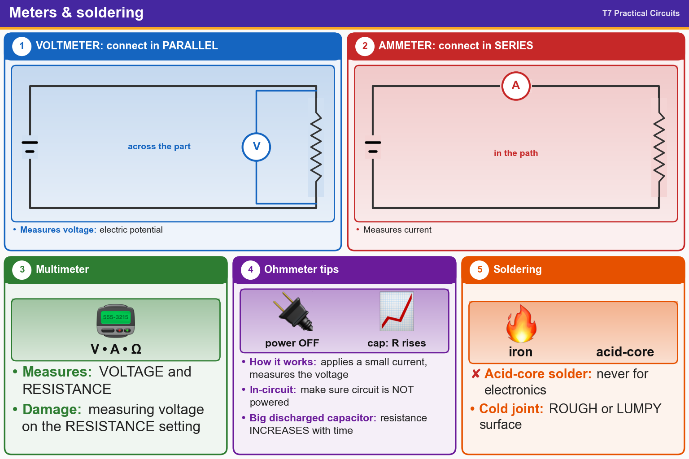

💡 Voltmeter in parallel, ammeter in series. Never use acid-core solder. Cold joint = lumpy.
Pick an answer for each question, then press Grade at the bottom.
T7D01
Which instrument would you use to measure electric potential?
✘A.An ohmmeter
✔B.A voltmeter
✘C.A potentiometer
✘D.An ammeter
T7D02
How is a voltmeter connected to a component to measure applied voltage?
✘A.In series
✘B.In quadrature
✘C.In phase
✔D.In parallel
T7D04
Which instrument is used to measure electric current?
✘A.A voltmeter
✔B.An ammeter
✘C.An electrometer
✘D.An ohmmeter
T7D03
When configured to measure current, how is a multimeter connected to a component?
✘A.In phase
✘B.In quadrature
✔C.In series
✘D.In parallel
T7D07
Which of the following measurements are made using a multimeter?
✘A.Impedance and reactance
✔B.Voltage and resistance
✘C.Signal strength and noise
✘D.All these choices are correct
T7D06
Which of the following can damage a multimeter?
✘A.Not allowing it to warm up properly
✔B.Attempting to measure voltage when using the resistance setting
✘C.Attempting to measure resistance using the voltage setting
✘D.Failing to connect one of the probes to ground
T7D05
How does an ohmmeter measure the resistance of a circuit or component?
✘A.By applying a variable voltage and measuring the resulting current change
✘B.By placing a variable resistor in parallel with the circuit
✘C.By placing a variable resistor in series with the circuit
✔D.By applying a small current and measuring the resulting voltage
T7D11
Which of the following precautions should be taken when measuring in-circuit resistance with an ohmmeter?
✘A.Ensure that the circuit is grounded
✔B.Ensure that the circuit is not powered
✘C.Ensure that the circuit is operating at the correct frequency
✘D.Ensure that the applied voltages are correct
T7D10
What reading indicates that an ohmmeter is connected across a large, discharged capacitor?
✘A.Steady full-scale reading
✔B.Increasing resistance with time
✘C.Alternating between open and short circuit
✘D.Decreasing resistance with time
T7D08
Which of the following types of solder should not be used for radio and electronic applications?
✘A.Lead-tin solder
✘B.Rosin-core solder
✔C.Acid-core solder
✘D.Tin-copper solder
T7D09
What is the characteristic appearance of a cold tin-lead solder joint?
✘A.A greenish tinge
✘B.Dark black spots
✘C.A bright or shiny surface
✔D.A rough or lumpy surface